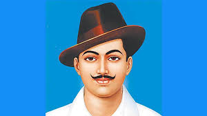

Bhagat Singh Execution's
Bhagat Singh was arrested and charged in the Saunders murder case, along with Rajguru, Sukhdev and others.
- This trial commenced in July 1929.
- In the Lahore prison where they were lodged, the young leaders started a hunger strike demanding better treatment as they were supposed to be political prisoners.
- They were met by many leaders including Jawaharlal Nehru, who expressed pain on seeing their distress.
- Bhagat Singh fasted for 116 days after which he ended it at the request of his father and Congress leaders.
- The trial, needless to say, was one-sided and Bhagat Singh, along with Rajguru and Sukhdev were sentenced to death.
- The trial and the subsequent sentence drew widespread condemnation from many quarters.
- Many national leaders requested a reduced sentence but to no avail.
- The trio was ordered to be hanged on 24 March 1931 but the sentence was carried out a day earlier at the Lahore Jail. After the hanging, their mortal remains were cremated in secret.
- It is said that Bhagat Singh cried 'Down with British imperialism' as he was hanged.
- This execution evoked strong reactions from the Indian people, particularly youngsters, and many were motivated to join the freedom struggle.
- 23rd March is observed as 'Martyrs' Day' or 'Shaheed Diwas' or 'Sarvodaya Day' in honour of Bhagat Singh, Rajguru and Sukhdev.

Shaheed Bhagat Singh
1907 - 1931
1907 - 1931
- Born : 28 September 1907, Banga, Pakistan
- Died : 23 March 1931 (aged 23), Lahore Central Jail, Pakistan
- Cause of Death : Execution by Hanging
- Parents : Sardar Kishan Singh Sandhu, Vidyavati
- Siblings : Prakash kaur, Kultar Singh, Amar Kaur, Shakuntla, Kulbir Singh,Rajinder Singh, Jagat Singh, Ranbir Singh
- Spouse : Dugavati Devi
- Children : Jasveer Singh, Kuldeep Singh, Paramjit
- Organization Founded : Naujawan Bharat Sabha & Hindustan Socialist Republican Association
- Criminal Charges /Panelty : Murder of John P. Saunders and Channan Singh / Death
- Cremation : 23 March 1931, The National Martyrs Memorial, Machhiwara